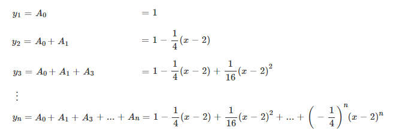

Algumas funções reais de variáveis reais podem ser aproximadas por polinômios infinitos. Como por exemplo a função `f(x)=4/(x+2)`, como veremos a seguir.
`f(x)=sum_(n=0)^ooubrace((-1/4)^n(x-2)^n)_(A_n)-=sum_(n=0)^ooar^n:.{(a=1),(r=-1/4(x-2)):}`Logo, a série de potência é convergente quando `|r|lt1`, ou seja, no intervalo de convergência `I_c=(:-2,6:)`
A aproximação da função `f(x)` pela série de potência no intervalo de convergência pode ser visualizado da seguinte forma:

As somas parciais se aproximam à função `f(x)` no intervalo de convergência `I_c` quanto maior for o número de termos da série. Com essa afirmação podemos perceber que algumas funções (diferenciáveis em todo o domínio) podem ser expandidas como uma soma infinita de série de potência. Essas são chamadas de Série de Taylor.